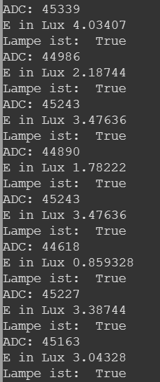

Bussysteme
SoSe 2023 Dr. Julian Huber
Objektorientierung
Motivation
- Funktion hat nur Input und Output aber keinen Speicher / Zustand
- z.B. wenn wir bei einer Messfunktionen das Signal glätten wollen, müssen wir den Zustand speichern

Grundkonzepte der Objektorientierung
- Objektorientierte Programmierung: Programmierparadigma mit Fokus auf Objekte, deren Eigenschaften und Fähigkeiten
- z.B. Objekt der Klasse
Sensor - Attribute (Eigenschaften mit Datentyp):
- Zählernummer
- Aktueller Messerwert
- Liste bisheriger Messerwerte
- Einheit
- Methoden (wie Funktionen):
- Mittelwert bilden
- Messen
- Letzten Messwert übermitteln

Klassen und Objekte
- Die Sensor-Klasse beschreibt allgemein das Verhalten jedes Sensors!
- Jeder einzelne Sensor ist ein Objekt der Klasse Sensor, bei dem die Attribute individuell ausgeprägt
classDiagram
class Sensor{
+string name
+string unit
+float measurement
+[]float measurements
+do_measurement()
+calc_mean()
+print_data()
}
Attribute
# Definition einer Klasse
class Sensor:
def __init__(self, name, unit):
self.name = name
self.unit = unit
self.measurement = None
self.measurements = []
# Instanziierung eines Objekts
sensor1 = Sensor("Temperatursensor", "°C")
sensor2 = Sensor("Beleuchtungsstärke", "Lux")
# Aufruf der Attribute
print(sensor1.name)
print(sensor2.name)
- Die Methode
__init__wird aufgerufen, sobald ein Objekt einer Klasse instanziiert wird. Die Methode kann dafür benutzt werden, ihr Objekt auf irgendeine Weise zu initialisieren - wichtig ist in jeder Methode als erstes Argument
selfzu übergeben, damit die Methode auf das Objekt zugreifen kann - Ebenso werden Attribute mit
selfdefiniert, damit sie dem Objekt zugeordnet werden
Methoden & Funktionen
- Methoden sind Funktionen, die zu einer Klasse gehören
- Funktionen sind wieder aufrufbare Code-Einheiten, denen Argumente als Parameter übergeben werden können
- Funktionen geben einen Rückgabewert aus, der weiterverarbeitet werden kann
# Definition einer Klasse
class Sensor:
def __init__(self, name, unit):
self.name = name
self.unit = unit
self.measurement = None
self.measurements = []
def print_data(self):
print("This " + self.name + "returns data in " + self.unit)
# Instanziierung eines Objekts
sensor1 = Sensor("Temperatursensor", "°C")
# Aufruf der Attribute
sensor1.print_data()
:writing_hand: Aufgabe 2_4_1: Implementierung einer Sensor-Klasse
import board
import analogio
import time
import digitalio
# Initialisierung des ADC (Analog-Digital Converter)
ldr = analogio.AnalogIn(board.A2)
class Sensor:
def __init__(self, name, unit):
self.name = name
self.unit = unit
self.last_measurement = None
self.measurements = []
def do_measurement(self, ldr):
self.last_measurement = ldr.value
self.measurements.append(self.last_measurement)
def print_data(self):
print("This " + self.name + "returns data in " + self.unit)
beleuchtungs_sensor = Sensor("Beleuchtungsstärke", "ADC")
# Wiederholung
while True:
# ADC als Dezimalzahl lesen
beleuchtungs_sensor.do_measurement(ldr)
print(beleuchtungs_sensor.last_measurement)
# Warten
time.sleep(1)
- Passen Sie den gegeben Code so an, dass der Sensor auch über eine Methode verfügt, welche den Mittelwert der Messwerte zurückgibt
- Sie können die folgende Funktion als Ausgangspunkt verwenden
- Vergessen sie nicht das
self-Argument zu übergeben - Hierdurch können sie auch die Übergabe des Parameters
list_of_measurementsvermeiden, die Sie sich im Objekt direkt aufself.measurementsbeziehen könnendef bilde_mittelwert(list_of_measurements): """ Eine Funktion, die eine Liste von Werten übernimmt und das arithmetische Mittel zurück gibt""" mittelwert = sum(list_of_measurements) / len(list_of_measurements) return mittelwert ergebnis = bilde_mittelwert([1,2,3])
:nerd_face: :writing_hand: Aufgabe 2_4_2:
- Stellen Sie sicher, dass maximal die letzten 10 Messwerte gespeichert werden
- Erweitern die Methode
calc_meanso, dass optional nur die letztennMesswerte berücksichtigt werden undnals Parameter übergeben werden kann - Integrieren Sie die
mappings.pyin Ihre Sensor-Klasse, damit diese Lux-Werte zurückgibt - :nerd_face: :nerd_face: Überlegen Sie, wie Sie dem Sensor bei der Instanziierung unterschiedliche Mapping-Funktionen übergeben können
Vererbung
- Durch Vererbung können die Attribute und Methoden einer (Parent-)Klasse an andere (Child-)Klassen weitergegeben werden.
- Neu implementiert werden müssen dann nur zusätzliche Datenelemente und Methoden.
- Im UML-Klassendiagramm wird die Vererbung mit meinem im leeren Dreieck endenden Pfeil dargestellt.
- Dies ermöglicht eine hierarchische Strukturierung von Klassen z.B. um schnell verschiedene Sensor-Klassen zu erstellen

JSON-Darstellung eines Objekts
Serialisierung von Objekten

- Zur Übertragung zwischen Systemen müssen Objekte unabhängig vom der Darstellung im Arbeitsspeicher gemacht werden
- Serialisierung:
- Objekt aus dem Arbeitsspeicher wird in eine Folge von Zeichen übersetzt (letztlich eine Folge von Bits)
- Austauschdateiformat (meist in Form einer Auszeichnungssprache)
Dictionaries
- Sind die Implementierung von Hash-Tabellen in Python (ein Datentyp vergleichbar mit einer Liste)
- Anstelle einer Liste, in der Werte über eine Indexposition abgerufen werden, werden Werte über einen Schlüssel abgerufen
- Schlüssel-Wert-Paare
{<key1>:<value1>, <key2>:<value2>, <key3>:<value3}my_dict = beleuchtungs_sensor.__dict__ print(my_dict)
{'last_measurement': 43114,
'measurements': [43130, 43034, 43066, 42666, 43370, 43114, 42426, 43114],
'name': 'Beleuchtungsstärke',
'unit': 'ADC'}
__dict__-Attribut enthält alle Attribute des Objekts als Dictionary
* Auf die Werte im Dictionary kann über den Schlüssel zugegriffen werden
print(my_dict["last_measurement"])
JavaScriptObjectNotation (JSON)
- Dictionary-Objekte können in JSON-Objekte umgewandelt werden
- JSON is eine Auszeichnungssprache, die für den Datenaustausch zwischen Systemen verwendet wird
import json with open("sample.json", "w") as outfile: json.dump(my_dict, outfile)
{"last_measurement": 43114,
"measurements": [43130, 43034, 43066, 42666, 43370, 43114, 42426, 43114],
"name": "Beleuchtungsst\u00e4rke",
"unit": "ADC"}
- über eine eignete Codierung (z.B. ASCII, UTF) können auch Binärdaten übertragen werden
1111011001001110110110101100101011101000110010101110010010111110110100101100100001001110011101000100000...